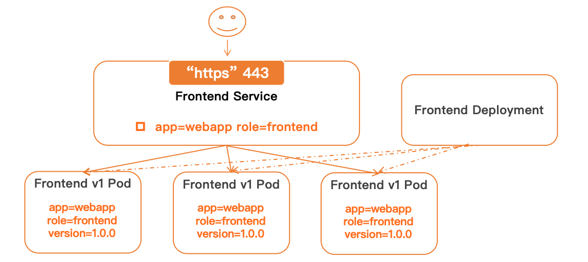
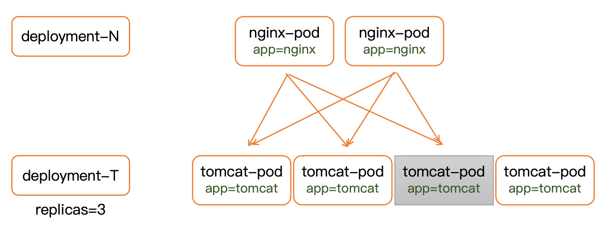
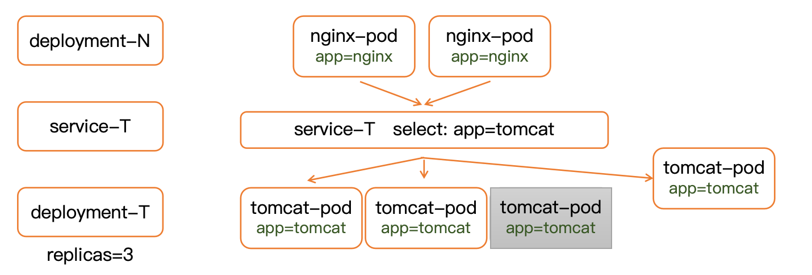
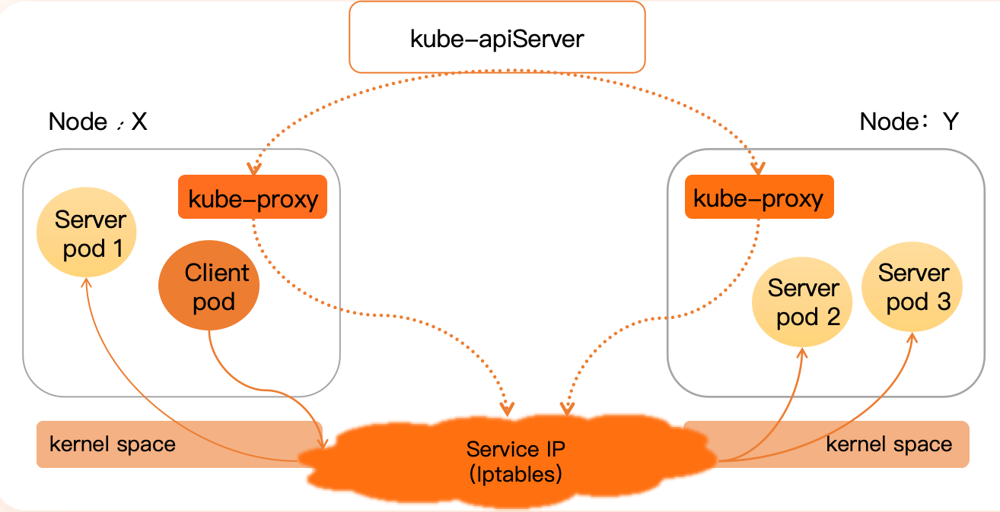

介绍了 Kubernetes 中 Service 的概念、工作原理、类型以及与控制器（如 Deployment）的协同关系。
Service的概念
K8S中Service用于访问一组Pod的策略，类似于微服务的概念。

如上图所示，我们可以Deployment创建出一组Pod，用做访问前端的服务器。
那么Service的作用就是“代理”，用户直接访问Service获取服务，Service自身帮你转发这个请求到实际的机器（节点）上。
为什么需要Service？

在传统的项目部署方式中，我们常常用nginx来代理用户请求，因为nginx可以很方便地帮你处理静态资源；并且nginx自带了负载均衡能力，可以帮你随机选择后端的一个tomcat服务器来响应动态请求。
而实际中使用nginx负载均衡时，需要在配置文件里填写各个tomcat的IP地址，这是固定的。但tomcat这种服务可能在运行过程中挂掉，然后又重开一个服务。所以这些服务器的IP不一定是不变的，所以为了方便管理，K8S提供了Service作为中间层，帮我们自动管理这些Pod。

此时nginx会直接把请求转发给Service，Service充当代理去访问pod中的服务。
Service工作原理

首先要理解：Service是一个IP转发配置工具，不是一个具体的请求转发的服务
Service在创建后，会记录并存储其负责的多个Pod的IP，以及访问这些pod服务的一些策略
每个Node上会有kube-proxy，它就是负责监听kube-apiserver来获取网络中各种Service的配置信息。
然后将这些Service配置信息，即请求代理转发信息，配置到Node中内核里的转发表（比如iptabels和ipvs）。
最后，当客户端 Pod 访问某个 Service（通过 Service IP）时，会经过以下流程：
步骤 1：kube-proxy 获取 Service 规则
kube-proxy会监听kube-apiserver的事件（图中虚线箭头），获取 Service 和 Endpoints 的变更信息。- 将 Service 与对应 Pod 列表转换为 iptables
规则，注入到内核的
netfilter表中。
步骤 2：客户端发起请求
Client pod通过访问某个 Service IP 来请求服务（例如通过http://service:port）。
步骤 3：iptables 拦截请求
- 请求进入内核空间后，被 iptables 规则捕获（在
PREROUTING链中）。 - 根据负载均衡规则，转发到某个后端 Pod（
Server pod 1/2/3中的某一个）。
步骤 4：请求被转发
- iptables 会将请求 重定向到某个 Pod 的 IP:Port。
- 如果目标 Pod 在本节点（如 Server pod 1），则直接通过本地网络转发。
- 如果目标 Pod 在其他节点（如 pod 2 或 3），则会走 跨节点转发，通常基于节点间网络（如 flannel、calico 等）。
由于IPVS拥有更加高效的负载均衡能力，我需要将kube-proxy底层转发规则改成IPVS的
1 | kl edit configmap kube-proxy -n kube-system |
找到mode字段，默认为空，代表使用iptables
修改成”ipvs”
由于只是修改了配置文件，还需要将所有node上的kube-proxy删除重建：
1 | kl delete pod -n kube-system -l k8s-app=kube-proxy |
下面是对你已有 Service 笔记的后续部分补充，结合了你上传的 PPT 内容（尤其是控制器部分）并保持一致的风格，重点阐述了 Service 与控制器（尤其是 Deployment）之间的协同关系、Service 的几种类型及其典型应用场景：
Service 与控制器协同
Kubernetes 中的 Service 通常配合 Deployment 使用。Deployment 控制 Pod 的副本数量和版本升级，而 Service 则提供对这些 Pod 的统一访问入口。
在实际生产中，我们通常这样做：
- 使用 Deployment 管理某个服务的多个 Pod 实例；
- 为该 Deployment 配置一个 Service，设置 selector 匹配标签；
- Service 会自动追踪这些标签对应的 Pod；
- 当 Pod 被替换（比如版本升级或扩缩容）时，Service 会自动感知并将请求转发到新的 Pod 上。
这样形成了一套完整的微服务生命周期管理流程：声明式控制 + 服务发现 + 自动负载均衡 + 热更新。
Service 的类型
Kubernetes 中的 Service 提供了多种类型，适用于不同的访问场景：
ClusterIP（默认类型）
- 用途：集群内部通信。
- 特点：只能在 Kubernetes 集群内部访问，不能从外部直接访问。
- 适用场景：服务间通信，例如后端服务访问数据库、前端访问后端。
1 | spec: |
NodePort
- 用途：集群外部访问。
- 特点：在每个 Node 上开放一个端口（范围为 30000-32767），将流量转发给对应的 Service。
- 适用场景：快速开发测试环境，暴露服务供外部访问。
1 | spec: |
LoadBalancer
- 用途：云平台环境对外提供服务。
- 特点：自动向云平台（如 AWS、GCP、阿里云等）申请负载均衡器，并暴露服务。
- 适用场景：部署在支持 LoadBalancer 的云服务商上。
1 | spec: |
ExternalName
- 用途：将 Kubernetes 内部服务映射到集群外部 DNS 名称。
- 特点：不进行代理，只提供 DNS 解析。
- 适用场景：访问外部服务，例如将数据库服务指向外部托管地址。
1 | spec: |
Headless Service（无头服务）
有时我们不希望 Service 做负载均衡，而是直接将客户端请求暴露给后端
Pod。此时可以设置 ClusterIP: None，这类服务被称为
Headless Service。
- 应用场景：
- StatefulSet 场景（需要稳定 DNS 映射）
- 客户端自己实现负载均衡
- 数据库集群等对节点有感知的系统
1 | spec: |
示例：前端访问后端的完整链路
1 | 用户请求 --> Service（type=NodePort） --> Pod (Deployment 控制) --> 后端服务 |
- 用户通过 Node IP + NodePort 发起请求；
- kube-proxy 监听请求，根据 iptables/IPVS 将请求转发至匹配的 Pod；
- Deployment 控制 Pod 的副本和滚动升级；
- Service 保证请求始终被分发至最新的、可用的 Pod 上。